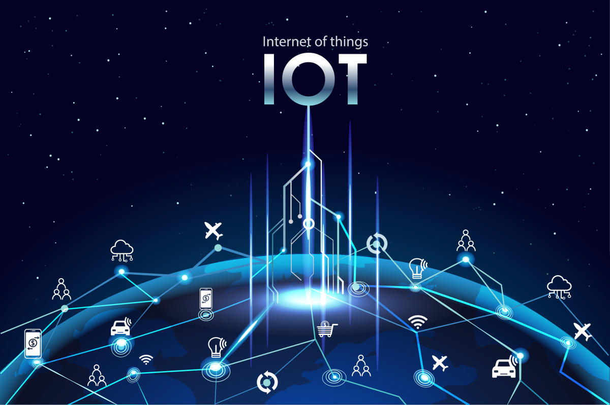

Что такое Интернет вещей?
Интернет вещей (IoT) — это концепция объединения физических устройств, которые связаны с интернетом и могут обмениваться данными между собой. Это включает в себя всё, от умных бытовых приборов до промышленного оборудования.
Ключевые особенности:
- Подключенные устройства: каждое устройство оснащено датчиками и программным обеспечением для связи.
- Аналитика данных: собираемые данные используются для прогнозирования и оптимизации процессов.
- Автоматизация: выполнение задач без участия человека.
Области применения:
- Умные города: управление энергией, транспортом и инфраструктурой.
- Сельское хозяйство: мониторинг состояния полей и управление орошением.
- Медицина: отслеживание состояния здоровья пациентов в реальном времени.
- Умные дома: автоматизация бытовых процессов, управление освещением и безопасностью.